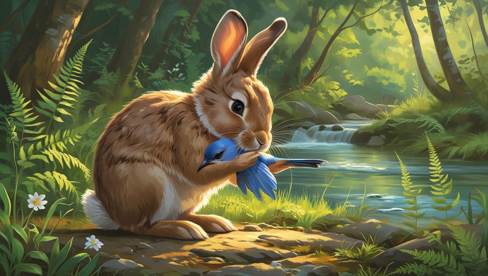

A gentle rabbit holding and comforting a small bluebird beside a sparkling forest stream, sunlight filtering through the trees, digital painting, soft and warm colors.
The Rabbit and the Bluebird
In a quiet forest, beside a sparkling stream, lived a gentle rabbit named Luma.
One morning, while playing near the ferns, Luma found a tiny bluebird trembling with fear.
The little bird had fallen from its nest and didn’t know how to fly Luma gently picked up the bird and whispered, “Don’t be afraid, I will help you.”
He comforted the bird with his warm paws as sunlight softly filtered through the trees. The flowers swayed gently, as if cheering for their new friendship.
Together, Luma and the bluebird searched for the nest high up in a tree.
At last, with a joyful hop and a little flutter, the bird was safely back home.
The bluebird chirped sweetly, thanking Luma for his kindness.
From that day on, the rabbit and the bluebird became the best of friends, always meeting by the sparkling stream.